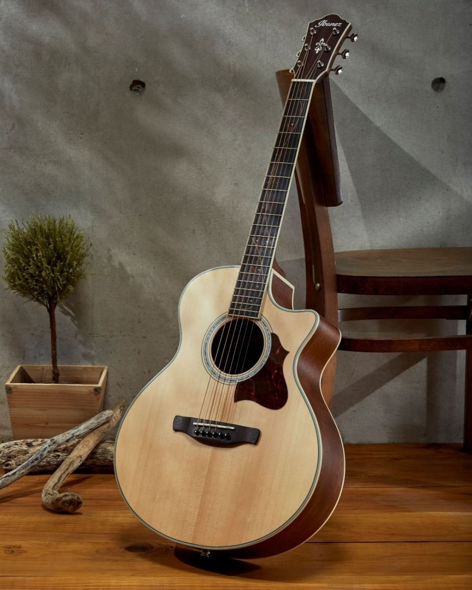

Selamat Datang
Jenis Alat Musik
Biola
Biola adalah sebuah alat musik dawai yang dimainkan dengan cara digesek. Biola memiliki empat senar (G-D-A-E) yang disetel berbeda satu sama lain dengan interval sempurna kelima. Nada yang paling rendah adalah G. Di antara keluarga biola, yaitu dengan biola alto, cello dan double bass atau kontra bass, biola memiliki nada yang tertinggi. Alat musik dawai yang lainnya, bas, secara teknis masuk ke dalam keluarga viol. Kertas musik untuk biola hampir selalu menggunakan atau ditulis pada kunci G.
Piano
Piano (yang juga disebut pianoforte) adalah alat musik tuts yang diklasifikasikan sebagai instrumen dawai dan perkusi yang dimainkan dengan menekan tuts-tuts pada papan piano Setiap tuts tersambung ke palu yang ada di dalam piano dan menekan senar di dalamnya, sehingga menghasilkan bunyi. Setiap senar memiliki panjang yang berbeda dan menghasilkan bunyi yang berbeda pula. Piano adalah alat musik yang dimainkan dengan jari-jemari tangan. Pemain piano disebut pianis. Pada saat awal-awal diciptakan, suara piano tidak sekeras piano abad XX-an, seperti piano yang dibuat oleh Bartolomeo Cristofori (1655 – 1731) buatan 1720. Pasalnya, tegangan senar piano kala itu tidak sekuat sekarang Kini piano itu dipajang di Metropolitan Museum of Art di New York. Meskipun siapa penemu pertama piano, yang awalnya dijuluki gravecembalo col piano e forte (harpsichord dengan papan tuts lembut dan bersuara keras) masih menjadi perdebatan, banyak orang mengakui, Bartolomeo Cristofori sebagai penciptanya. Piano juga bukan alat musik pertama yang menggunakan papan tuts dan bekerja dengan dipukul Alat musik berprinsip kerja mirip piano telah ada sejak 1440.
Gitar
Alat musik Gitar adalah salah satu jenis alat musik dawai. Gitar juga memiliki pengertian lain, yaitu merupakan salah satu alat musik yang dimainkan dengan cara dipetik. Biasanya alat musik satu ini dimainkan atau dipetik menggunakan jari atau bisa juga dengan plektrum. Secara umum alat musik dawai ini tersusun atas sebuah bagian yang terdiri dari leher padat. Leher pada gitar lah yang dijadikan tempat senar atau nilon yang berjumlah enam dijajarkan. Gitar seiring dengan perkembangan zaman mengalami modifikasi pada setiap bagian nya. Mulai dari bentuk alat dan juga teknologi yang dipakai.
Saxophone
Saxophone (sering disebut dengan nama Sax) adalah alat musik tiup kayu walaupun bahan dasar pembuatan alat musik itu sendiri adalah berbahan logam. Disebut alat musik tiup kayu karena sumber bunyi alat musik yang sexy ini adalah dari sebuah bambu tipis dan panjang yang ditempatkan pada bagian bawah mouthpiece (bagian untuk meniup sax) yang disebut reed. Reed ini dibedakan menjadi dua jenis, yaitu single reed yang digunakan pada alat musik ini dan jenis double reed yang pada umumnya digunakan untuk alat musik basoon atau oboe.